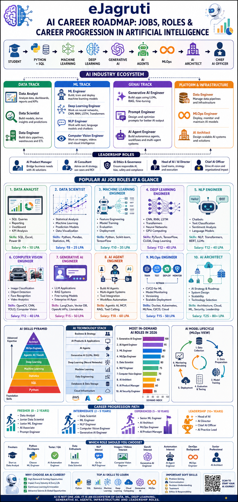
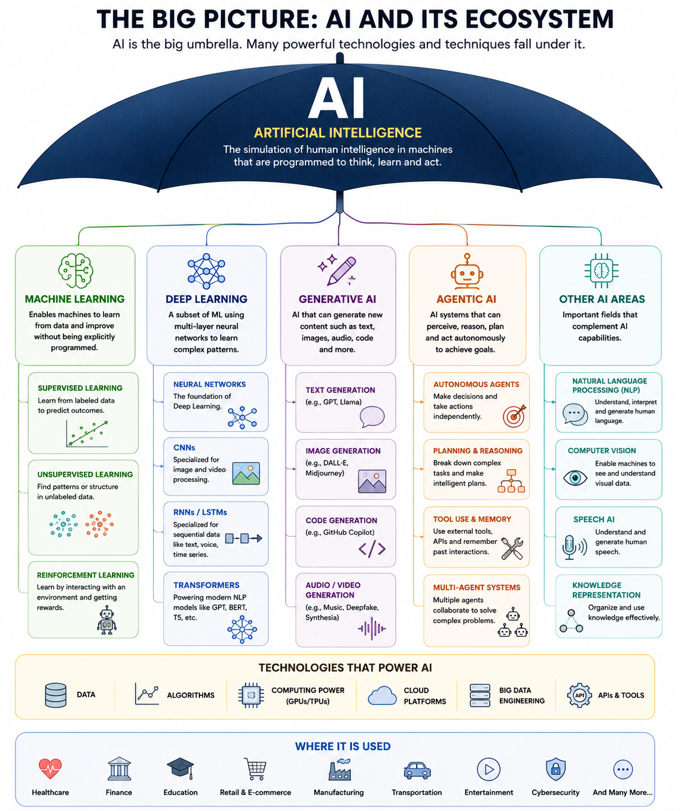
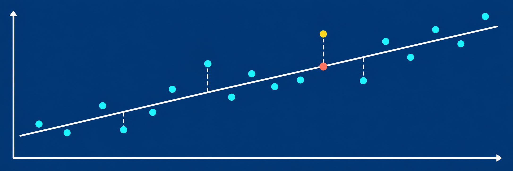
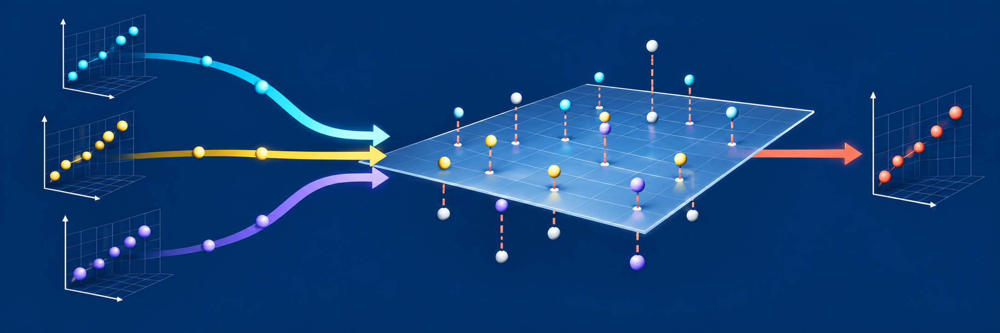
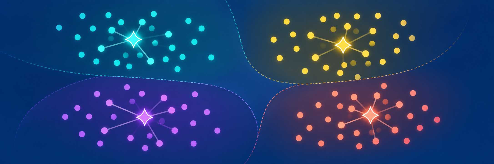

Simple Linear Regression
Prerequisites

01S
Supervised
Machine LearningLearn from labelled data
02U
Unsupervised
Machine LearningDiscover hidden patterns
03R
Reinforcement
Machine LearningLearn through rewards
01
Simple Linear Regression
02
Multi Linear Regression
03Logistic Regression
05TBD2
06TBD3
01
K Mean Clusters
Simple Linear Regression
Core Concepts
Simple Linear Regression
Solved Case Studies
K Mean Clusters
Prerequisite
K Mean Clusters
Core Concepts
K Mean Clusters
Agricultural Field Grouping
K Mean Clusters
Problem Statements
01Household Electricity Service Planning
Discover groups of households with similar consumption and service patterns, then recommend suitable energy-saving programs for each group.
- Inspect and clean smart-meter data.
- Scale measurements appropriately.
- Justify the number of clusters.
- Profile groups and recommend strategies.
02E-Commerce Inventory Strategy
Discover product groups with similar commercial and supply characteristics, then design a distinct inventory policy for each group.
- Inspect product and supply data.
- Handle scale and skewness.
- Justify the number of clusters.
- Profile groups and recommend policies.
{kind=link}
{kind=link}
{kind=link}